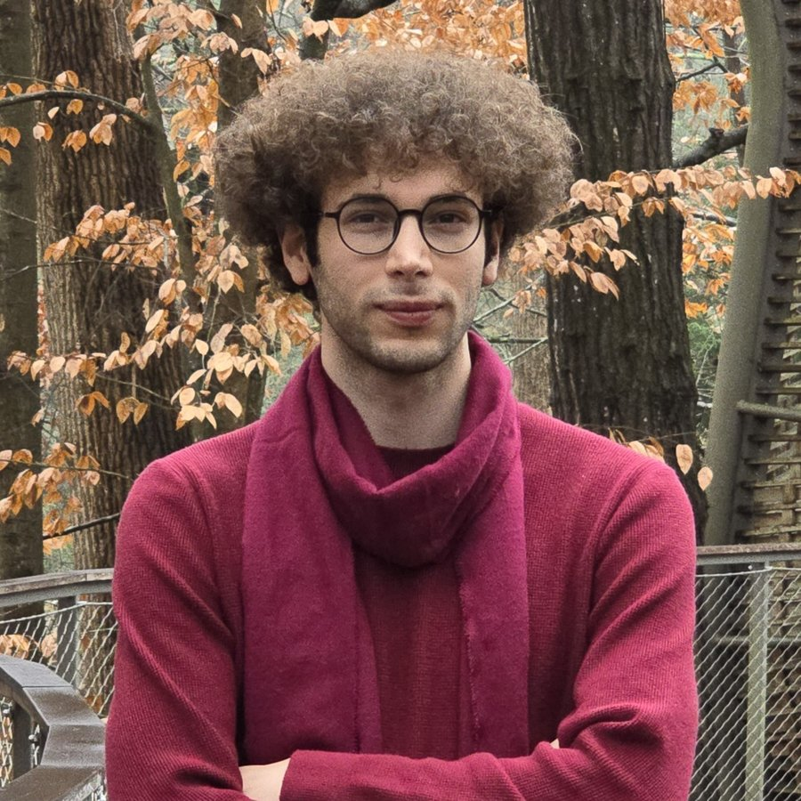
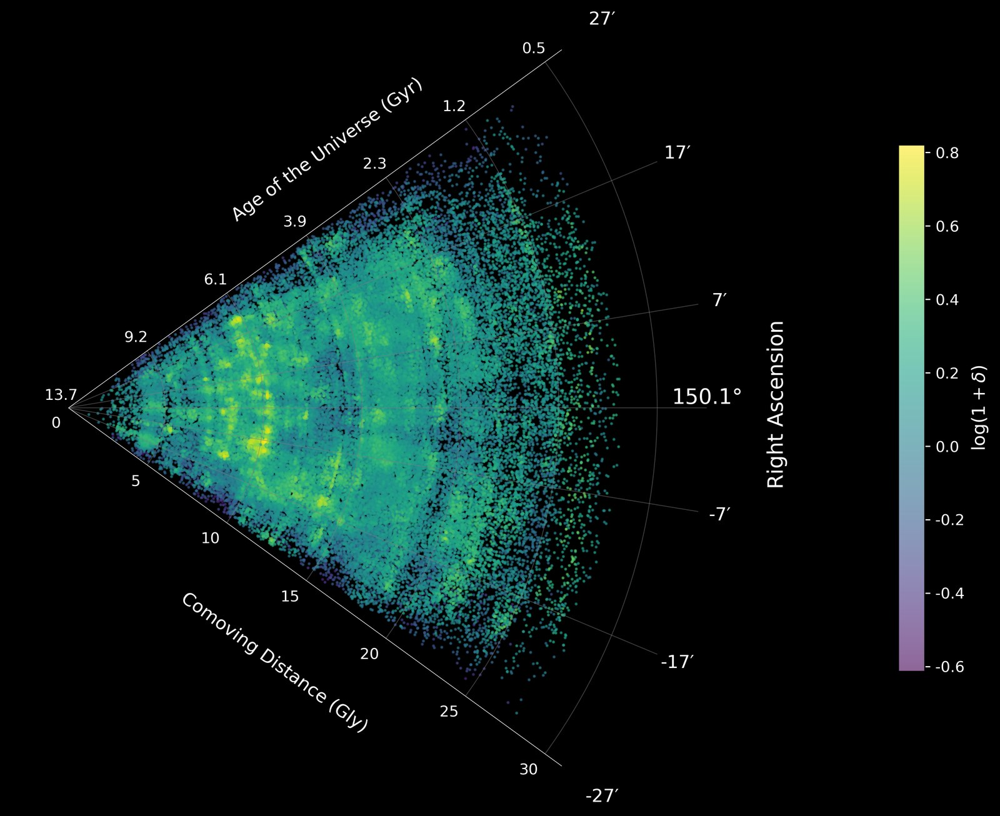
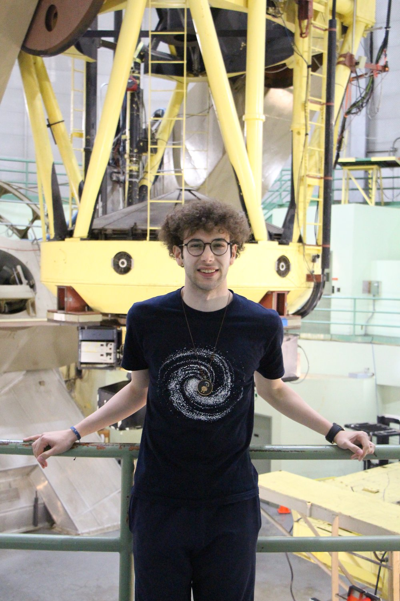
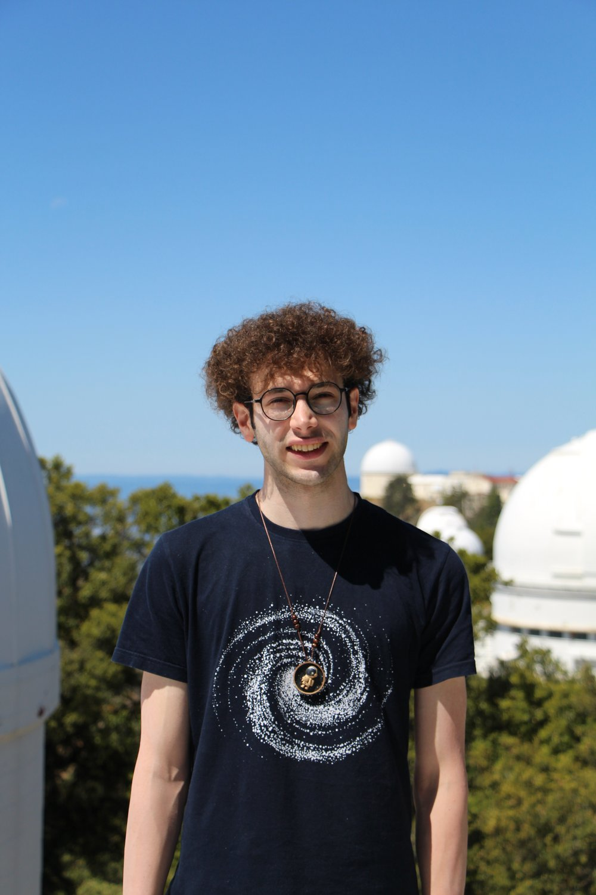

Hossein Hatamnia

Bio
I am a second-year graduate student in Astronomy at the University of California, Riverside. I received my M.S. in Astronomy en route at UCR and my B.S. in Physics from Sharif University of Technology.
I am a recipient of the UCR-Carnegie Fellowship and work with Dr. Drew Newman on Lyman-alpha tomography. I also work with Prof. Bahram Mobasher at UCR on the evolution of galaxies in the cosmic web. I am part of the COSMOS, LARC, Euclid, Roman, H2O, and MIGHTEE teams.
The Cosmic Web

Large-scale structure map from the COSMOS-Web field — made by me.
Research
My research focuses on the connection between galaxy evolution and large-scale structure. With Prof. Bahram Mobasher, I study how the physical properties of galaxies evolve in different cosmic environments. I am currently developing a method to identify voids, filaments, and clusters in the COSMOS-Web field, with the goal of understanding how environment shapes galaxy growth across cosmic time.
I also work with Dr. Drew Newman on Lyman-alpha tomography. In this project, I study LATIS Lyα emitters and their connection to the Lyα flux maps through cross-correlation measurements. I am interested in using these measurements to understand how galaxies trace the large-scale structure of the Universe at cosmic noon.

Key Publications
- Large-scale Structure in COSMOS-Web: Tracing Galaxy Evolution in the Cosmic Web up to z ∼ 7 with the Largest JWST Survey
- An ultra-high-resolution map of (dark) matter
- Discovery of a Little Red Dot Candidate at z ≳ 10 in COSMOS-Web Based on MIRI-NIRCam Selection
- COSMOS2025: The COSMOS-Web galaxy catalog of photometry, morphology, redshifts, and physical parameters from JWST, HST, and ground-based imaging
- COSMOS Spectroscopic Redshift Compilation (First Data Release): 488,000 Redshifts Encompassing Two Decades of Spectroscopy
- One-point statistics in various cosmic environments in the presence of massive neutrinos
Curriculum Vitae
Selected Talks & Poster Presentations
-
Contributed Talk
COSMOS MeetingLarge-Scale Structure in COSMOS-Web: Evolution of Galaxies in the Cosmic Web
-
Poster
Towards SKAO — MeerKAT Symposium & WorkshopRadio Spectral Energy Distribution of Star Forming Galaxies at z < 1.5
-
Contributed Talk
IAU/IHOW Radio Astronomy WorkshopRadio Spectral Energy Distribution of Star Forming Galaxies at z < 1.5
Code & Data
Contact

Questions about my research, the cosmic web, or potential collaborations are welcome. The fastest way to reach me is by email.